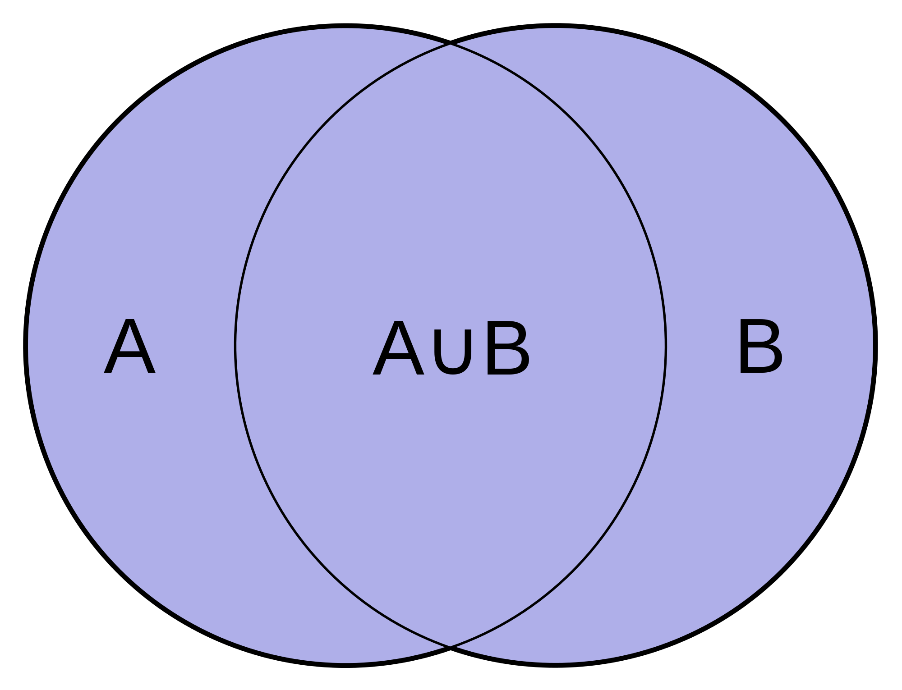
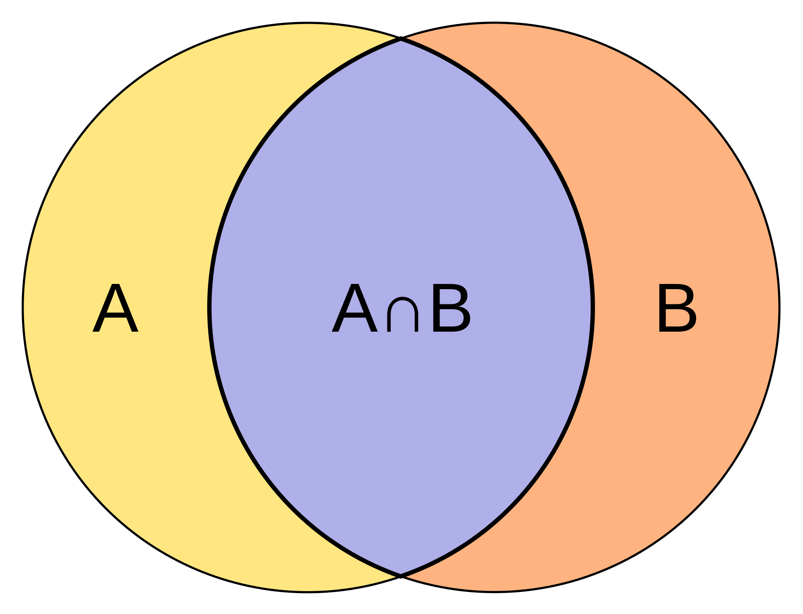
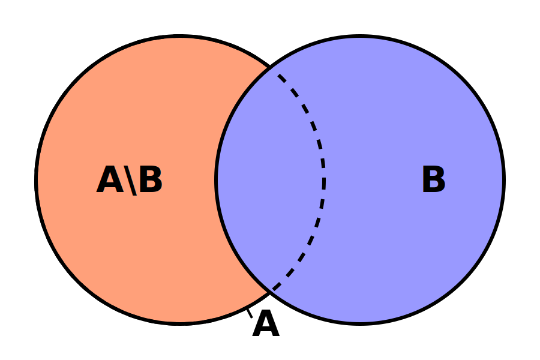
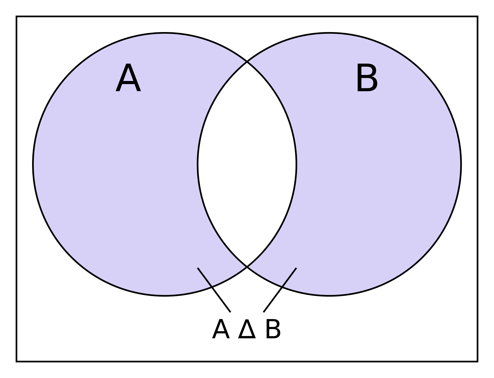

More Data Types: Dictionaries and Sets
Created for
Iva E. Popova, 2021,

Dictionaries
Dictionaries
What is a Dictionary?
- An unordered collection of objects (values)
- Each value is associated with a unique key.
- A dictionary can be regarded as a collection of key:value pairs
- Dictionaries in Python are similar to associative arrays, hashes (hash tables) in other programming languages (PHP, Perl, Ruby)
Dictionary Structure

Syntax
dictionary = {
'key1': value 1,
'key2': value 2,
'keyN': value N
}
- There is no order in dictionary! We can not say if 'key1' pair will be before 'key2' pair
- Keys must be immutable data type. Usually they are strings.
- Keys must be unique. If multiple "key:values" pairs with the same key exists, only the last one pair will be present in the dictionary
Dictionaries - examples
en_bg_dict = {
'apple': 'ябълка',
'orange':'портокал',
'banana':'банан'
}
print(en_bg_dict['apple'])
# ябълка
Dictionaries - unique keys example
en_bg_dict = {
'apple': 'ябълка',
'orange':'портокал',
'banana':'банан',
'apple':'манго',
}
print(en_bg_dict['apple'])
# манго
Retrieve item from dictionary
Dictionary values can be retrieved from the collection using their respective keys.
item = dictionary_name[key]
prices = {
"apples": 2.50,
"oranges": 2.43,
"bananas": 3.50
}
apples_price = prices['apples']
print("{:.2f}".format(apples_price))
# 2.50
oranges_price = prices['oranges']
print("{:.2f}".format(oranges_price))
# 2.43
Change item in a dictionary
dictionary_name[key] = new_value
### change apples prices:
prices['apples'] = 2.20
print(prices)
# {'apples': 2.2, 'oranges': 2.43, 'bananas': 3.5}
Add item in a dictionary
dictionary_name[new_key] = new_value
prices = {
"apples": 2.50,
"oranges": 2.43,
"bananas": 3.50
}
### add new key:value pair:
prices['plums'] = 4.30
print(prices)
# {'apples': 2.5, 'oranges': 2.43, 'bananas': 3.5, 'plums': 4.3}
Delete item from dictionary: del - operator
del dictionary[key]
- Deletes the key:value pair whit the given key
prices = {
"apples": 2.50,
"oranges": 2.43,
"bananas": 3.50
}
### just delete 'oranges' key:value pair:
del prices['oranges']
print(prices)
# {'apples': 2.5, 'bananas': 3.5}
Delete item from dictionary: pop()
pop(key[, default])
- If key is in the dictionary, remove it and return its value, else return default.
- If no key or default values are given a KeyError is raised.
Delete item from dictionary: pop() - example
prices = {
"apples": 2.50,
"oranges": 2.43,
"bananas": 3.50
}
### remove 'apples' key:value pair from the dictinary, and return its value
apples_price = prices.pop('apples')
print(apples_price, prices)
# 2.5 {'oranges': 2.43, 'bananas': 3.5}
apples_price = prices.pop('apples', 5.00)
print(apples_price)
# 5.0
Get all dictionary keys: keys()
- the
keys()method of a dictionary returns a dict view object of dictionary keys, which means the view will reflect the changes of the dictionary keys.
prices = {
"apples": 2.50,
"oranges": 2.43,
"bananas": 3.50
}
fruits = prices.keys()
print(fruits)
# dict_keys(['apples', 'oranges', 'bananas'])
keys() - dynamic view example
prices = {
"apples": 2.50,
"oranges": 2.43,
"bananas": 3.50
}
# get prices keys view:
prices_keys = prices.keys()
print("before:", prices_keys)
# add new key-value pair:
prices["new_key"]="new value"
# check if prices_keys contains the new key
print("after:", prices_keys)
before: dict_keys(['bananas', 'oranges', 'apples'])
after: dict_keys(['new_key', 'bananas', 'oranges', 'apples'])
Get all dictionary values: values()
- the
values()method of a dictionary returns a dict view object dictionary values
prices = {
"apples": 2.50,
"oranges": 2.43,
"bananas": 3.50
}
price_list = prices.values()
print(price_list)
# dict_values([2.5, 2.43, 3.5])
values() - dynamic view example
prices = {
"apples": 2.50,
"oranges": 2.43,
"bananas": 3.50
}
# get prices values view:
prices_values = prices.values()
print("before:", prices_values)
# change a value:
prices["oranges"]=100
# check if prices_values reflects the change:
print("after:", prices_values)
before: dict_values([3.5, 2.5, 2.43])
after: dict_values([3.5, 2.5, 100])
Get all dictionary items (key-value pairs): items()
- the
items()method of a dictionary returns a dict view object of dictionary items, i.e. a view of key-value pairs
prices = {
"apples": 2.50,
"oranges": 2.43,
"bananas": 3.50
}
prices_items = prices.items()
print(prices_items)
dict_items([('bananas', 3.5), ('apples', 2.5), ('oranges', 2.43)])
items() - dynamic view example
prices = {
"apples": 2.50,
"oranges": 2.43,
"bananas": 3.50
}
# get prices items view:
prices_items = prices.items()
print("before:", prices_items)
# remove an item:
del prices["oranges"]
# check if prices_items reflects the change:
print("after:", prices_items)
before: dict_items([('apples', 2.5), ('oranges', 2.43), ('bananas', 3.5)])
after: dict_items([('apples', 2.5), ('bananas', 3.5)])
dict views in Python2
- The
keys(),values()anditems()methods return view objects only in Python3. In Python2 they return lists. - The Python2 equivalents are
viewkeys(),viewvalues()andviewitems()methods.
Iterate over dictionary keys:
for key in dict_name:
# do something with a key
# this is equivalent to:
for key in dict_name.keys():
# do something with a key
prices = {
"apples": 2.50,
"oranges": 2.43,
"bananas": 3.50
}
for k in prices:
print(k)
bananas
apples
oranges
Iterate over dictionary values:
for value in dict_name.values():
# do something with a value
prices = {
"apples": 2.50,
"oranges": 2.43,
"bananas": 3.50
}
for v in prices.values():
print(v)
2.43
3.5
2.5
Iterate over keys and values
- This is the most often used and the most Pythonic construct for looping over dictionaries
for key, value in dict_name.items():
# do something with a key
# do something with a value
prices = {
"apples": 2.50,
"oranges": 2.43,
"bananas": 3.50
}
for fruit, price in prices.items():
print("{} - {}".format(fruit, price))
apples - 2.5
oranges - 2.43
bananas - 3.5
More on dictionaries
dictclass @python docs- Dictionary view objects @python docs
Sets
Sets
What is a Set?
- An unordered collection of unique and immutable objects.
- Note that the set itself is a mutable object.
- Set data type in Python is an implementation of the sets as they are defined in mathematics.
Sets vs Dictionaries
- Similarities:
- Both are unordered collection of objects (values).
- Both are mutable (add/remove/modify elements)
- Both use curly braces for their literals.
- Differences:
- A Set can not contain duplicate items! Dictionaries can.
- A dictionary is a collection of
key:valuepairs. - Set is just a values collection
Syntax
set = {value1, value2, valueN}
- There is no order in a set! We can not say if 'value1' pair will be before 'value2'.
- No duplicate items are allowed. If we define a set with duplicate items, only one of them will be present in the set. Others are ignored.
Simple set - example
int_numbers = {1, 2, 3, 4, 5}
print(int_numbers)
print(type(int_numbers))
# {1, 2, 3, 4, 5}
# <class 'set'>
No set of mutable data - example
set_of_numbers = {1,2,3}
print(set_of_numbers) #{1, 2, 3}
set_of_strings = {"a", "b"}
print(set_of_strings) #{'b', 'a'}
set_of_imutables = {"a", 1, "b", 2, 3}
print(set_of_imutables) #{'a', 'b', 2, 3, 1}
set_of_mutables = { [1,2,3], ["a", "b"] }
print(set_of_imutables) #TypeError: unhashable type: 'list'
Ignoring duplicate items - example 1
int_dup_numbers = {1, 2, 3, 1, 2, 4, 3, 5, 1, 2, 3}
print(int_dup_numbers)
# {1, 2, 3, 4, 5, 6}
Ignoring duplicate items - example 2
int_numbers = {1, 2, 3, 4, 5}
int_dup_numbers = {1, 2, 3, 1, 2, 4, 3, 5, 1, 2, 3}
print(int_numbers == int_dup_numbers)
# True
Basic sets operations
Basic sets operations
Sets Union
{kind=link}
Returns new set, which elements are in either sets.
Sets Union - example
Pipe operator | or method union can be used
set1 = {1, 2, 3, 4}
set2 = {5, 4}
union1 = set1 | set2
union2 = set1.union(set2)
print(union1)
print(union2)
# {1, 2, 3, 4, 5}
# {1, 2, 3, 4, 5}
Sets Intersection
{kind=link}
Returns new set, which elements belong to both sets.
Sets Intersection - example
Ampersand operator & or method intersection can be used
set1 = {1, 2, 3, 4}
set2 = {5, 4}
intersec1 = set1 & set2
intersec2 = set1.intersection(set2)
print(intersec1)
print(intersec2)
# {4}
# {4}
Sets Difference
{kind=link}
C = A - B, where C is a new set, which elements are the elements of A, which are not present in B
Sets Difference - example
Operator - or method difference can be used
set1 = {1, 2, 3, 4, 5}
set2 = {5, 4}
dif1 = set1.difference(set2)
dif2 = set1 - set2
print(dif1)
print(dif2)
# {1, 2, 3}
# {1, 2, 3}
Sets Symmetric Difference
{kind=link}
C = A △ B, where C is a new set, which elements are either in sets A or B but not in both.
Sets Symmetric Difference - example
Pipe operator | or method union can be used
set1 = {1, 2, 3, 4}
set2 = {5, 4}
sym_dif = set1.symmetric_difference(set2)
print(sym_dif)
# {1, 2, 3, 5}
More on sets
Exercises
task1_best_students_scores.py
the task
- Represent the information given in next table in appropriate data structure, named
student_scores.
{kind=link}
the task
- From
student_scoresdata, create a new data structure namedbest_students_scores, storing the information (name and score) only for students with scores greater than 4.00 - Print out the names of the students from
best_students_scores
Ivan
Maria
Georgy
task2_min_max_student_score.py
the task
- Using the same information as in Task1, i.e.
the task
- Print out the name and score of the student with maximum score
- Print out the name and score of the student with minimum score
Maria - 5.5
Alex - 3.5
task3_simple_word_index.py
the task
- Make a program which will counts the words frequency (the count) of a given text
apple and banana one apple one banana
a red apple and a green apple
a - 2
green - 1
banana - 2
and - 2
one - 2
red - 1
apple - 4
Notes
- For simplicity we will get the "words" as a space separated sequences in string.
- To get that list of words we can use the
str.split()method, as shown:
text = "some words delimited by spaces"
words_list = text.split()
print(words_list)
['some', 'words', 'delimited', 'by', 'spaces']
A more sophisticated output
- Display the words count as a table, sorted by the descending count of each word
- Note that the first column width is equal to the length of the longest word
|apple | 4 |
|banana| 2 |
|one | 2 |
|a | 2 |
|and | 2 |
|green | 1 |
|red | 1 |
task4_users_bills.py
the data
- A simplified data for telecom users are stored as two relational tables:
id | name | number
---|---------|---------------
1 | "Maria" | "+39587111111"
2 | "Ivan" | "+39587222222"
3 | "Asen" | "+39587333333"
id | bill
---|---------
1 | 25.50
2 | 30.48
3 | 5.98
the task
- Represent the data in appropriate data structures in order to:
- being able to add/remove records from each table
- find and print the name of the user with highest bill
- find and print the name of the user with lowest bill
The user with highest bill - 30.48 is Ivan
The user with lowest bill - 5.98 is Asen
Submission
- Please, prefix your filenames/archive with your name initials, before sending.
- For instance: iep_task1.py or iep_tasks.rar
- Send files to progressbg.python.course@gmail.com
These slides are based on
customised version of
framework